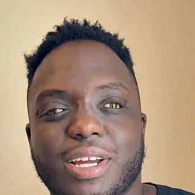

Reviews
-
AppleWatchDave Apple Watch YouTuber
It looks like a battery, but this is actually IRL Health Bar… it sums up all your health metrics into one simple bar.
A massive game changer — and I'm using it all the time.
-
Draftish Design YouTuber
Your health data turned into one glanceable bar — like a health bar in a game.
It’s my new favorite.
-
Grace Content creator
It basically turned my health into a video game.
Instead of digging through a bunch of health data, I can just glance down at my watch and see instantly where I’m at.
-
Siya Marathon runner
Most fitness apps show you more data. What most runners actually need is more clarity. Think of it like a fuel gauge for your body.
-
CRF Content creator
It takes confusing data nobody really understands and puts it into words that are actually simple to understand.
-

POLO Content creatorAs y'all can hear, this app is very accessible for the visually impaired community.
Free · No subscription · No account
Apple Watch Series 4 or later